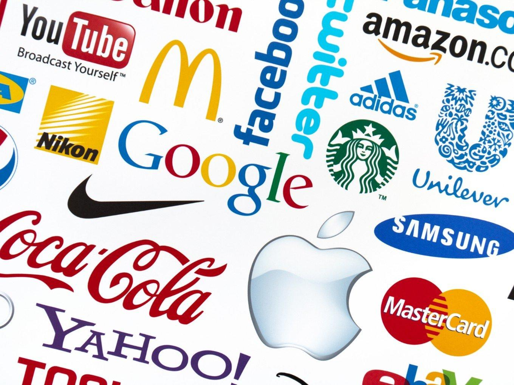
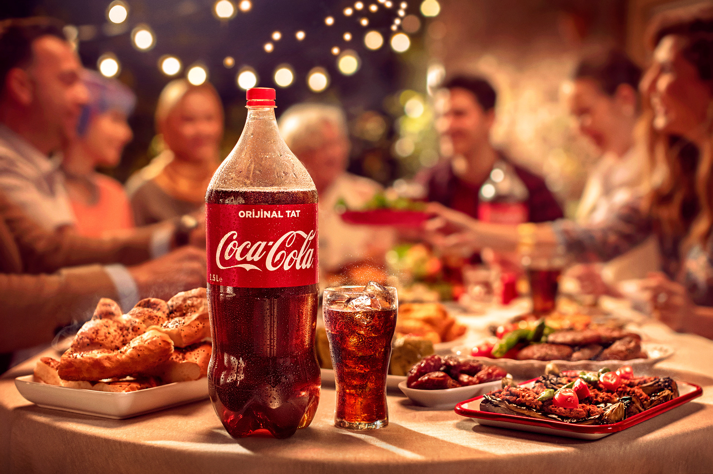

Introduction

Global branding means having a brand that is recognized and trusted in different countries.A strong global brand helps a business grow and attract more customers.In this presentation,we will explain what global branding is, its benefits,and why it is important for FreshMart
FreshMart:“freshness and quality over price”
To learn better, imagine having a business named “FreshMart” and the brand of “freshness and quality over price.” FreshMart stands out by offering products that prioritize freshness and exceptional quality, ensuring our customers always get the best. Our brand promise is clear: we believe that quality should never be sacrificed, even when keeping prices competitive. With FreshMart, you experience a shopping experience that values freshness and quality, helping you make healthier choices every day.
What is global branding?
“Global branding is when your product or service has a shared brand identity system—such as a consistent name, logo, aesthetic, and messaging—established in most or all parts of the world.” It means having one consistent and recognizable identity across most of the world. Example :Samsung is identified as “technological” all around the world.
Freshmart global brand
If you want your Freshmart business to go global you need to make your brand global .The global brand must be recongizible and consistent with ““freshness and quality over price”
Why is global branding important ?
When a business wants to expand globally , global branding helps them a lot in several ways:
1 Brand Recognition: A global brand allows customers to easily identify the business and its offerings, building trust and familiarity. It reduces necessary marketing and marketing costs as business will not need to create a whole brand from nothing again.
2 Cost Efficiency: It reduces the need for separate marketing strategies in different regions, cutting down marketing costs significantly.
3 Time and Effort Saving: Businesses do not need to create a brand from scratch for every region, simplifying expansion efforts.
4 Competitive Edge: A strong global brand can compete more effectively with local and international competitors.
5 Customer Loyalty: A well-established brand fosters customer loyalty, as people tend to trust familiar brands over unknown ones.
Why is global branding important for freshmart.
Creating a brand for Freshmart is difficult . It needs a lot of money , time and effort for marketing. And creating a new brand for each region will require tremendous amount of effort. That is why crating only one brand for Freshmart and using it every region is important. It saves a lot of money, time and effort
How to have a successful global brand.
Market Research:
Learn about global and local competitors.
Analyze customer behaviors and preferences across different regions.
Consistency in Branding:
Maintain the same logo, color schemes, messaging, and brand voice globally.
Ensure all marketing materials align with brand identity.
Clear Brand Guidelines:
Develop a detailed branding guide covering visual elements, vision, and communication strategy.
Ensure all employees and partners follow these guidelines.This is necessary for consistency.
Adaptability: Modify aspects of the brand based on cultural and regional preferences.
Examples: McDonald’s offering different menus in various countries, Coca-Cola adjusting flavors.
Partnerships & Localization:
Collaborate with local influencers, brands, and businesses to strengthen brand presence. Adapt campaigns to local trends while maintaining the core brand identity.
How to make Freshmart successful brand.
Make consistent branding about quality and freshness. Create clear brand guidelines to help with consistency. After making your brand consistent start analyzing local and global market and customers. Be adaptable and add small changes in marketing and products for each region.
Consistency vs Adaptability
Should a global brand be more consistent or more adapted to each region ? It depends on the business . Technology brands rarely alter their brand (like iPhone , Samsung ). While food and drinks brands adapts a lot to culture , religion ,and tastes of different regions (Coco-cola , Dominos ) . It is easier make alterations to food than technology. Out of the two , consistency is more important . Adaptability helps greatly with globalization and bringing diverse range of customers , but without consistency there is no global brand. Most global businesses need to balance the two to their needs.
Consistency vs Adaptability for FreshMart
FreshMart is a supermarket. So it is easy to be adaptable without affecting the consistency off brand. You can change the marketing and the items being sold for each region .
Why global branding is hard
Why global branding has its hardships related to it being global:
Cultural Differences: What works in one country may not resonate in another. Legal and Regulatory Barriers: Different countries have different laws affecting branding and marketing. Competition from Local Brands: Global brands must compete with well-established local brands. There is also the issue of language barriers and economic and pricing differences.
FreshMart brand diffuculties
As a supermarket FreshMart will need to be more aware of culture and preferences of each region . To keep up the brand of freshness and high quality legally, you need to learn legal and regulatory barriers of each region. For example Japan is more strict about than other countries about advertisement around freshness.
Examples of successful global strategies.
Apple: Premium
Consistency in Premium Identity: Apple is a quintessential example of global branding success through consistency. The brand has carefully built an identity around innovation, sleek design, and a premium experience, which is maintained across all markets. Whether you’re in the U.S., Japan, or Germany, Apple's minimalist design philosophy and product interface are the same, making the brand immediately recognizable everywhere. Brand Loyalty and Trust: The uniform experience and product ecosystem (iPhone, Mac, iPad, etc.) build a loyal customer base. Apple also fosters loyalty through its ecosystem, ensuring customers have a seamless experience across devices. Its focus on privacy and security resonates strongly with a global audience, aligning with customers’ growing concerns about data protection.
Nike: Just do it
Global Inspiration with Local Focus: Nike’s global campaigns feature a consistent message of athletic excellence, empowerment, and personal achievement. The iconic “Just Do It” slogan is universally applicable, but Nike also tailors its ads to speak to local cultures and athletes. For instance, it highlights regional sports heroes or figures important to local audiences—such as featuring football players for U.S. markets and cricket stars for Indian audiences. Strong Athlete Partnerships: By sponsoring global athletes like Michael Jordan, Serena Williams, and Cristiano Ronaldo, Nike reinforces its image as a brand that empowers elite athletes. These figures help Nike transcend regional boundaries and cement its image as the go-to brand for sportswear.
Coca-Cola: Emotions
Emotional Storytelling: Coca-Cola's brand revolves around creating an emotional connection with its audience, regardless of geography. Their global campaigns, like "Share a Coke," emphasize the feelings of happiness and togetherness that the brand represents. Coca-Cola’s use of universal themes, such as family, friendship, and celebration, transcends cultural barriers, making the brand appeal to a wide range of audiences. Localized Flavor Options: Coca-Cola has successfully adapted its product to meet regional preferences. For instance, in Japan, it has introduced unique flavors like Coca-Cola Peach and Coca-Cola Clear. In some markets, Coca-Cola offers drinks with less sugar or entirely different product lines to meet health-conscious trends in regions like Europe.